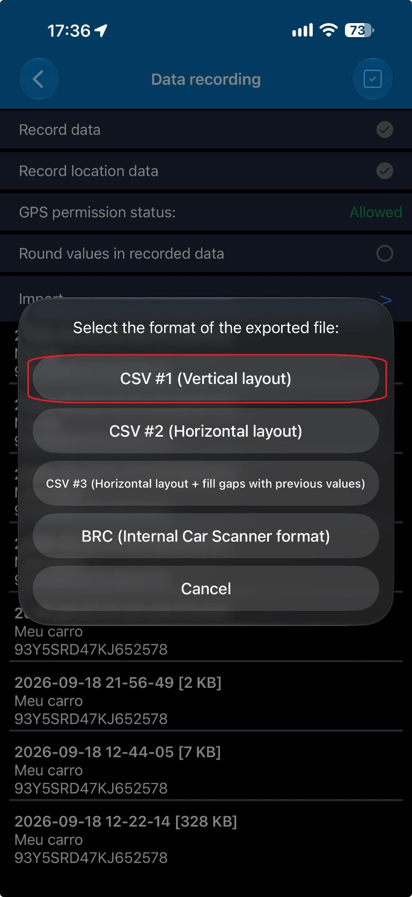

Log exportado do Car Scanner no formato CSV #1 (Vertical layout).
Tamanho máximo: 10 MB.
🔒 O arquivo é lido apenas no seu navegador. Nada é enviado nem armazenado em servidor — ao fechar a página ele deixa de existir. Os resultados ficam salvos só neste aparelho, e você pode apagá-los em “Limpar dados”.
